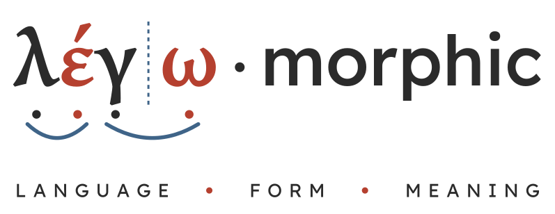

About
Legomorphic Notation
A set of marks and colours drawn on ordinary spelling, so that what a reader usually has to work out alone is there for everyone to see: how many sounds a word has, which letters spell each sound, where its meaningful parts join, and which letters change the sounds of others.
The word
Legomorphic is built from two old words, a word for gathering and a word for shape.

Lego is the same word in Greek and in Latin, and in both it means “I gather.” Greek legō (λέγω) first meant to pick out, to gather and to count, and from picking out words it came to mean to say and to tell. Latin legō (legere) means to gather and to choose, and also to read. The root gives a speaker’s word in Greek and a reader’s word in Latin.
English has both families. From the Greek come lexicon, dialogue and logic; from the Latin, legible, lecture, collect and select. Linguists trace them all to a Proto-Indo-European root, written *leg-, to collect or gather.
Morphē (μορφή) is Greek for form or shape. It gives us morpheme, and morphology, the study of word forms, which joins the same two roots the other way round.
So the notation is named for the shapes words take when we gather them: the sounds we pick out and say, the letters we pick out and read, and the parts they build together.
Etymologies from the Online Etymology Dictionary: *leg- and morphology.
What it shows
The notation explores four systems at once: orthography, phonology, morphology and syntax. It works through graphemes, phonemes and morphemes, and through the order in time in which a message is put together.
In a word, vowels are red, consonants black, and sh, th and ch green. The marks fall into three groups.
- Sounds. A sound circle under each sound, a bond bar under letters that spell a single sound, a cup or a bar over a vowel for short or long, and a red bar under a vowel and its r.
- Parts. A syllable swoop under each syllable, and a morpheme seam between meaningful parts.
- Letters working on letters. The vowel vault, an arc from an e, or from a vowel after a single consonant, back to the vowel it makes long. The block box, around a pair or cluster of consonants that stops that reach, and the blocked vault, which ends in a red X where it does. The cone of silence around a silent e, and the nice-nudge from e, i or y to the c or g it softens.
Contractions take a red apostrophe in place of the vowel they drop.
In a sentence the colours change jobs. Actors and the things acted on are green, actions are red, and operators, the words that can move to the front to make a question, are blue. Reading the marks has the legend with a drawing of each mark.
How it’s used
It isn’t a program. It’s an exploration of ways to provide access, and an invitation to experiment with our methods and synthesize our understandings. It can sit beside any systematic phonics program, synthetic or analytic, and it aims to be systematic, analytic, synthetic, responsive, diagnostic and agnostic.
Its teaching cycle is the learning loop. Learners move among seeing, listening, speaking, reading and writing: a clean pass, then back to the start, back to any earlier mode, or between any two. Each pass can swap a part (a sound, its articulation, an actor, an action, an operator, a preposition) to fit the learner’s need, interest and skill in the moment.
The route through English spelling on this site is its own scope and sequence, with Edward Carney’s A Survey of English Spelling as its backbone and his page references on every step.
Who made it
Legomorphic Notation and this site are the work of Dante Wetherow, B.Ed., M.Ed. The writers it builds on are on the Credits page.
It opens a new message in your email app.